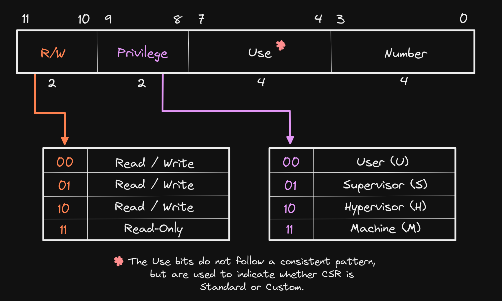
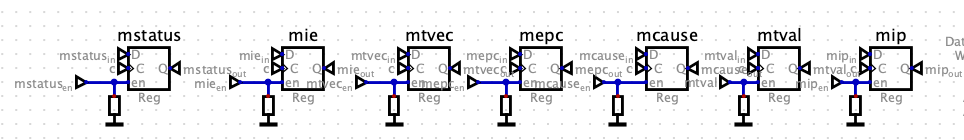
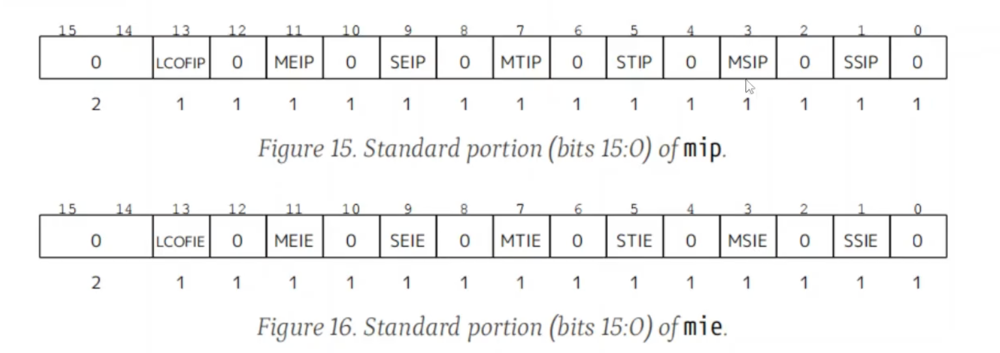
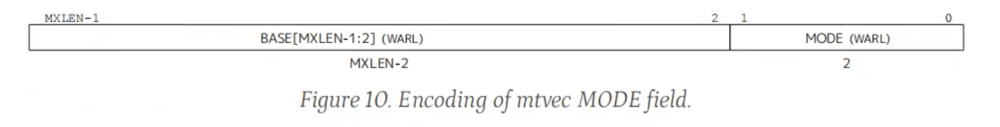
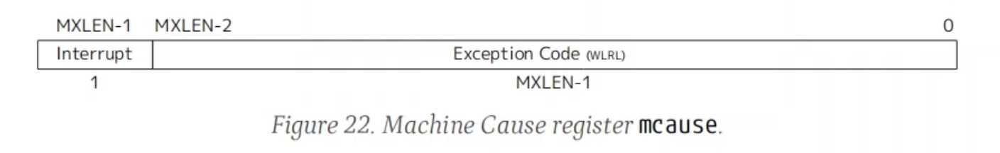
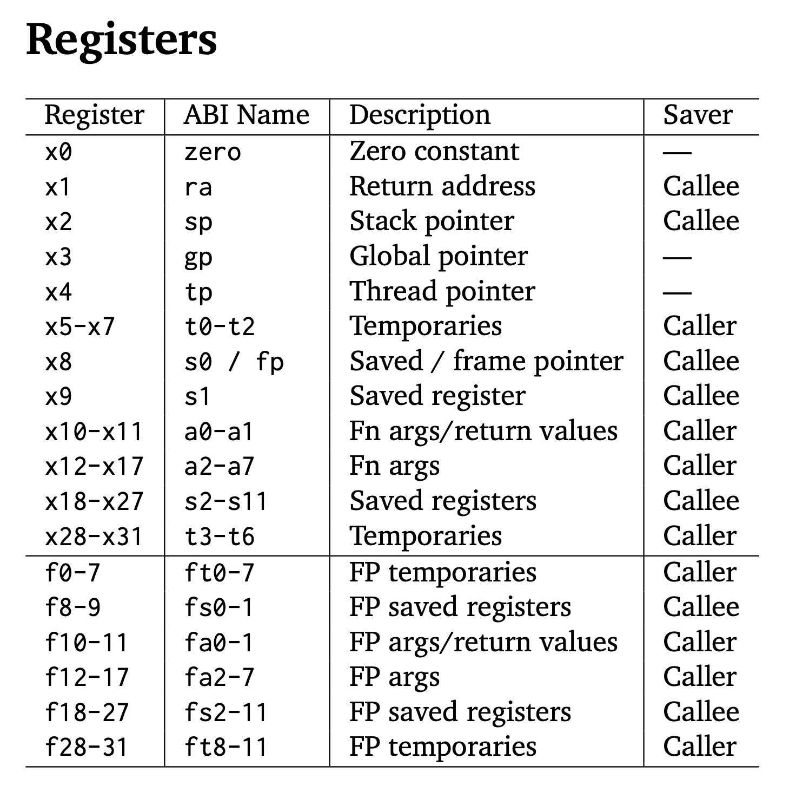
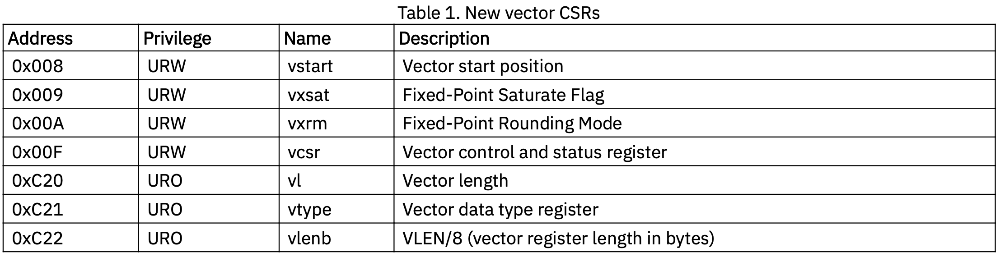
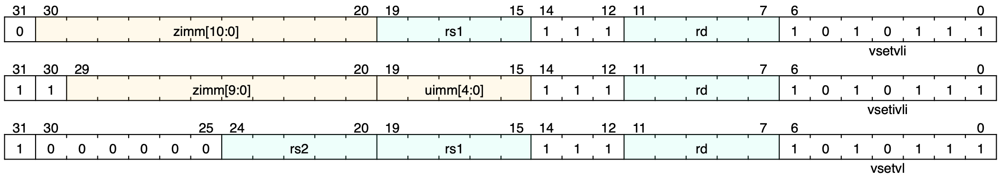

RISCV ISA
Exported from Notion, may not be well-organized.
RISCV Extensions
In RISC-V, extensions are optional instruction sets that extend the base ISA (RV32I, 32-bit integer instructions) to add extra functionality.
Some extensions are listed here:
| Extension | Meaning | Purpose |
|---|---|---|
| M | Integer Multiplication & Division | Adds mul, div, rem instructions |
| A | Atomic Instructions | Adds atomic memory operations (e.g., amoadd.w) |
| F | Single-Precision Floating Point | Supports float (32-bit) operations |
| D | Double-Precision Floating Point | Supports double (64-bit) operations |
| C | Compressed Instructions | Reduces code size (e.g., c.add, c.sw) |
For example, RV32IMAC → A 32-bit RISC-V CPU with Integer (I), Multiply (M), Atomic (A), and Compressed (C) extensions. RV32IMAFD can be reduced to written as RV32G.
Zicsr: Z (Standard), I (Integer), CSR (Support read and write to CSRs)
指令类型
ALU 运算
One category of instructions is arithmetic operations (abbr. aluop), which is just doing things between GPRs.
Commonly Used aluop instructions:
lui t0, 0x40000 ;t0 = 0x40000 << 12 (load upper 20 bits of the imm) add t0, t1, t2 ;t0 = t1 + t2 sub t0, t1, t2 ;t0 = t1 - t2 (no imm version) or t0, t1, t2 ;t0 = t1 | t2 and t0, t1, t2 ;t0 = t1 & t2 xor t0, t1, t2 ;t0 = t1 ^ t2 addi t0, t1, 10 ;t0 = t1 + 10 (decimal) ori t0, t1, 0xF ;t0 = t1 | 0xF andi t0, t1, 0xF ;t0 = t1 & 0xF xori t0, t1, 0xF ;t0 = t1 ^ 0xF sll t0, t1, t2 ;t0 = t1 << t2 (shift left logical) srl t0, t1, t2 ;t0 = t1 >> t2 (shift right logical) sra t0, t1, t2 ;t0 = t1 >> t2 (shift right arithmetic, preserve sign) slli t0, t1, 2 ;t0 = t1 << 2 srli t0, t1, 2 ;t0 = t1 >> 2 srai t0, t1, 2 ;t0 = t1 >> 2 (preserve sign) slt t0, t1, t2 ;t0 = (t1 < t2) (set if less than signed) sltu t0, t1, t2 ;t0 = (t1 < t2) (set if less than unsigned) slti t0, t1, -5 ;t0 = (t1 < -5) (imm signed) sltiu t0, t1, 10 ;t0 = (t1 < 10) (imm unsigned)
CSR 寄存器及其操作
Introduction
CSR (Control and Status Registers)
Are accessed using CSR instructions, not via memory-mapped I/O, same as GPIO registers.
GPRs can be accessed at any privilege level, while CSRs are defined at a specific privilege level and can only be accessed by that level and any levels of higher privilege.
Every CSR has a unique address, each 32 bits share one address (instead of 8 bits).
CSR addresses are 12-bits, meaning that up to 4,096 CSRs can be implemented (\(2^12 = 4096\)). The bits in a CSR address define its accessibility, use, and CSR number. 
While GPRs are used for storing data used to perform operations, CSRs typically modify the behavior of a hart (i.e. “Control”) or inform of its state and attributes (i.e. “Status”), or both.
WARL(Write any, read legal): Some field in a CPU register that allows any value to be written, but when read back, it returns only a valid (legal) value. For example, inMPP[12:11]field inmstatusregister, we have:
| Write Attempt (MPP) | Stored Value (MPP field) |
|---|---|
| 00 (User) | ✅ 00 (User mode) |
| 11 (Machine) | ✅ 11 (Machine mode) |
| 01 (Illegal) | 🔄 Returns 00 or 11 (Legal) |
| 10 (Illegal) | 🔄 Returns 00 or 11 (Legal) |
- CSRs related intimitely to interrupts and exceptions (interrupts are external (“asynchronise”), exceptions are internal (“synchronise”, usually through software or timer), some place confuse them though, but it’s okay).
Commonly Used CSRs and their sub-fields
The registers are labelled in this format: reg (addr, reset_val).

mstatus (0x300, 0x00001800): Machine Status (lower 32 bits), controls global interrupt enable and privilege modes.
mstatus.MPP[12:11]: Machine Previous Priviledge mode. When an mret is executed, the privilege mode is change to this value.mstatus.MIE[3]: Machine (global) Interrupt Enable.mstatus.MPIE[7]: Machine previous Interrupt Enable. When an interrupt occurs, the content inmstatus.MIEis loaded into this bit (and for simplicity,mstatus.MIEis changed to 0, so no other interrupts is allowed to come in), and after the interrupt is processed (aftermret), this bit is restored intomstatus.MIEagain.
misa (0x301, depends on RV32 and M_EXT):mie (0x304, 0x00000000): Machine Interrupt Enable, enables specific interrupts (not global). Also you should have a look atmip (0x344).mip (0x344): Machine Interrupt Pending Register, indicates which specific interrupts are pending. MSIP/MSIE[3]: Machine Software Interrupt Pending/EnableMTIP/MTIE[7]: Machine Timer Interrupt Pending/EnableMEIP/MEIE[11]: Machine External Interrupt Pending/Enable
mtvec (0x305, ): Machine Trap-Handler Base Address, specifies where the CPU jumps on an interrupt/exception. MODE[1:0]:- 00: Direct. All traps (either interrupts or exceptions) set
PCdirectly toBASE. - 01: Vectored. Exceptions will set
PCdirectly toBASE, while (asynchronous) interrupts will setPCtoBASE+4*mcause.Exception Code(Seemcauseregister.) - others: invalid.
- 00: Direct. All traps (either interrupts or exceptions) set
mepc (0x341, 0x00000000): Machine Exception Program Counter, saves the address of the interrupted instruction.- When an interrupt occurs, the current PC + 1 is saved in
mepc. - When an exception is encountered, the current PC is saved in
mepc. (Why? The exception may triggered by the instruction at the current PC, maybe we solve the exception in the interrupt handler, so give it another chance to execute that instruction again.)
and the core jumps to the exception address. When a
mretinstruction is executed, the value frommepcreplaces the current program counter.- When an interrupt occurs, the current PC + 1 is saved in
mcause (0x342): Machine Trap Cause, identifies the cause of the interrupt/exception. Interrupt[31]:- 1: Exceptions
- 0: Interrupts
Exception Code[30:0]: (pay special attention to the number 3/7/11)Interrupt[31]Exception Code[30:0]Description 1 0, 2, 4, 6, 8, 10, 12, 14-15 Reserved 1 1 / 3 Supervisor/Machine software interrupt 1 5 / 7 Supervisor/Machine timer interrupt 1 9 / 11 Supervisor/Machine external interrupt 1 13 Counter-overflow interrupt 1 ≥16 Designated for platform use 0 0 Instruction address misaligned 0 1 Instruction access fault 0 2 Illegal instruction 0 3 Breakpoint 0 4 Load address misaligned 0 5 Load access fault 0 6 / 7 Store/AMO address/access fault 0 8 / 9 / 11 Environment call from U/S/M-mode 0 10, 14, 17, 20-23, 32-47, ≥64 Reserved 0 12 Instruction page fault 0 13 Load page fault 0 15 Store/AMO page fault 0 16 Double trap 0 18 Software check 0 19 Hardware error 0 24-31, 48-63 Designated for custom use
mtval (0x343): Machine Trap Value, provides extra information about exceptions (their addresses and so on)
Commonly Used CSR instructions
;register version:
csrrw x5, mstatus, x10 ;x5 = mstatus (read), mstatus = x10 (write)
csrw mtvec, t0 ;mtvec = t0 (write only)
csrrs x5, mie, x10 ;x5 = mie (read), mie |= x10 (set)
csrrc x5, mie, x10 ;x5 = mie (read), mie &= x10 (clear)
;imm version:
csrrwi x5, mstatus, 0x1 ;x5 = mstatus (read), mstatus = 0x1 (write imm)
csrrsi x5, mie, 0x1 ;x5 = mie (read), mie |= 0x1 (set imm)
csrrc x5, mie, 0x1 ;x5 = mie (read), mie &= 0x1 (clear imm)Convenient pseudo-instructions:
csrr rd, csr ;csrrs rd, csr, x0
csrw csr, rs ;csrrw x0, csr, rs
csrs csr, rs ;csrrs x0, csr, rs
csrc csr, rs ;csrrc x0, csr, rs
csrwi csr, imm ;csrrwi x0, csr, imm
csrsi csr, imm ;csrrsi x0, csr, imm
csrci csr, imm ;csrrci x0, csr, immGPRs 通用寄存器
Introduction
The 32 registers in RISC-V are called general-purpose registers (GPRs, or “integer registers”). They are used for various purposes, such as holding data, addresses, or temporary values during program execution. These registers are 32 bits wide in the RV32I ISA and are identified as x0 to x31.
Each register has a conventional name that indicates its intended usage, although these names are just conventions, and you can use them for other purposes if needed.

Partial Explanations
raPurpose: Stores the return address for function calls.
jal ra, function_label # Jump to function_label and store return address in ra ret # Return to the address in raspPurpose: Points to the top of the stack (used for dynamic memory allocation during function calls).
addi sp, sp, -16 # Allocate 16 bytes on the stack sw t0, 0(sp) # Store t0 at the top of the stack lw t0, 0(sp) # Retrieve t0 from the stack addi sp, sp, 16 # Deallocate 16 bytesgpPurpose: Points to global and static data in memory.
lw t0, 0(gp) # Load a value from the global data sectiontpPurpose: Points to thread-local storage (used in multi-threaded programs).
lw t0, 0(tp) # Load a thread-specific valuet0-t6Purpose: Temporary values, not preserved across function calls.
跳转指令
Introduction
One category of instructions is jump operations (abbr. jmpop), which is just changing the value of PC (or some GPRs by the way)
Commonly Used aluop instructions
; unconditional:
jal ra, 0x10 ;ra = PC + 4, PC += 0x10 (link and jump, should be laj)
jalr ra, 8(t0) ;ra = PC + 4, PC += t0+8 (wrt a register)
; conditional:
beq t0, t1, 0x8 ;PC += 0x8 if t0 == t1 (branch if equal)
bne t0, t1, 0x8 ;PC += 0x8 if t0 != t1 (branch if not equal)
blt t0, t1, 0x8 ;PC += 0x8 if t0 < t1 (signed less than)
bge t0, t1, 0x8 ;PC += 0x8 if t0 >= t1 (signed greater or equal)
bltu t0, t1, 0x8 ;PC += 0x8 if t0 < t1 (unsigned less than)
bgeu t0, t1, 0x8 ;PC += 0x8 if t0 >= t1 (unsigned greater or equal)
auipc t0, 0x1000 ;t0 = PC + (0x1000 << 12) (add upper imm and PC to a reg)Notes
load:
lbu a1, 0(t1)
sb a1, 0(t2)
addi t1, t1, 1
addi t2, t2, 1
bltu t2, t3, loadIf lbu a1, 0(t1) is at location 0x8000001a, then this line: bltu t2, t3, load does NOT mean
PC += 0x8000001a if t2 < t3but
PC = 0x8000001a if t2 < t3(done by the smart compiler!)
Machine Mode
Introduction
One category of instructions is machine operations (abbr. machineop), which is a set of privileged instructions in the RISC-V privileged architecture. These instructions are all related to the CSRs, so make sure you are familiar with those registers first.
RISCV Privilege Levels from High to Low
- Debug (D)
- Machine (M): “must-have”
- Supervisor (S)
- Hypervisor-extended Supervisor (HS)
- Virtual Supervisor (VS)
- Virtual User (VU)
- User (U)
Commonly Used machineop instructions
mret: Return from Machine-mode to Supervisor-mode (or User-mode). Steps:- Restore the privilege mode:
- The processor sets the current privilege mode based on MPP from mstatus.
- MPP is cleared to user mode (00) or supervisor mode (01) if applicable.
- Restore the interrupt enable status:
- The MIE bit in mstatus is set to MPIE.
- The MPIE bit is cleared (0).
- Restore the program counter (PC):
- The PC is set to the value stored in mepc, resuming execution where it was interrupted.
- Restore the privilege mode:
内存操作
Introduction
One category of instructions is memory operations (abbr. memop), which is just exchanging data between GPRs to memory locations.
So naturally, these signals are crucial for storing a data into memory:
WE: Write enable. Whenever a memop intruction is detected, the memory block needs to be enabled.[31:0] data_mem: the 32-bit data to be stored.[31:0] mem_addr: where to be stored.[3:0] storebytes_size: Store a byte (0001), half word (0011), or a word (1111)?
Commonly Used memop instructions
lui t0, 0x40000 ;t0 = 0x40000 << 12b (load unsigned imm)
lb t0, 1(a0) ;t0 = mem[a0 + 1] (load byte)
lh t0, 2(a0) ;t0 = mem[a0 + 2] (load half word)
lw t0, 4(a0) ;t0 = mem[a0 + 4] (load word)
lbu t0, 1(a0) ;unsigned (zero extending)
lhu t0, 2(a0) ;unsigned (zero extending)
sb t0, 1(a0) ;mem[a0 + 1] = t0 (store byte)
sh t0, 2(a0) ;mem[a0 + 2] = t0 (store half word)
sw t0, 4(a0) ;mem[a0 + 4] = t0 (store word)RVV 向量扩展
Vector GPRs
- 有关 Vector GPRs 焊死的常量 (不能更改):
- RVV GPRs: 总共 \(32\) 个向量寄存器 (
v0-v31), 类比 scalar 的x0-x31. VLEN(Vector LENgth): RVV GPR 的位宽. 由于一个向量寄存器中要同时装很多数, 不像 GPRs 那样每个寄存器才 \(32\) 位宽, RVV 的 GPR 位宽很大, 比如 \(512\) bits.- 这个数储存在
vlenb向量寄存器中.
- 这个数储存在
ELEN(Element LENgth): 一个向量寄存器中会存多个数 (Elements, 个数为vl), 这些数的长度都相等 (都等于sew), 毕竟以后这些数都要在一条指令的作用下同时被运算 (SIMD). 这些 Element 的数量有一个最小值, 取到这个最小值时每个 Element 的长度取到最大值 (ELEN).
- RVV GPRs: 总共 \(32\) 个向量寄存器 (
Vector CSRs
向量指令不同于标量指令, 执行所有向量指令之前, 都需要先配置 RVV 的工作状态 (比如要操作的元素大小)! Vector CSRs 就是用来配置这个的.
Vector CSRs 定义
RVV 添加了 \(7\) 个新的 CSR 寄存器:
Figure 1: RVV 新增的 CSR 寄存器 [1]. 详细介绍可以看 [1] 或这篇博客的第三讲. 我们主要关注 Figure fig-rvv-csr 中的
vtype:
Figure 2: vtype寄存器只有低 \(8\) 位有用 [1]. 且直接对应 Figure fig-rvv-config 中vsetvl的rs2的所有 \(32\) 位、vsetvli和vsetivli指令的zimm低 \(8\) 位字段 (高位其实没有用).
可配置的量

vsew 改变 sew [2].
vtype(Vector Type): 用几个向量寄存器和一个元素占多少 bit:lmul(Length multiplier): 一条向量指令真正操作的 RVV GPR 的数量 (而不是几个 element!)lmul=2记为m2.lmul\(>1\) 表示使用了一个 Vector Group.
sew(Selected Element Width): 实际使用中的 Element 的位宽 (sew\(\le\)ELEN).sew=16记为e16.- 可通过
vtype寄存器的vsew字段改变sew(见 Figure fig-vsew-sew).
- Masking 规则配置 (Mask 指是否要将选中的 element 的结果全部写回目标寄存器, 可以选择其中一部分写回, 很多指令都支持这个功能. 无论是否使用, 都要先将这个选择的规则配置在
v0寄存器中.):- Mask Undisturbed (
mu): 被 mask 掉的目标寄存器中的 element 保持原值. - Mask Agnostic (
ma): 被 mask 掉的目标寄存器中的 element 被设置成了全1.
- Mask Undisturbed (
vl((Application) Vector Length, AVL): 在选择了的向量寄存器中, 并不是所有元素都必须操作, 可以通过设置 AVL 的值来只操作前面的部分元素. 比如 Figure fig-lmul-sew-vl 中我们只选择操作前面vl=6个元素. 后面两个灰色元素没有被操作 (“tail elements”). 对尾巴的处理可以有两种 tail policy (tP):- Tail Undisturbed (
tu): 目标寄存器的 tail elements 保持原值. - Tail Agnostic (
ta): 所有目标寄存器的 tail elements 被设置成了全1. vlmax:= (VLEN/sew) *lmul表示总共最多能使用多少个 Element.
- Tail Undisturbed (

配置指令
RVV 配置指令 [1]: 通过这些指令来配置 Vector CSRs.
vsetvli rd, rs1, vtypei # rd = new vl, rs1 = AVL, vtypei = new vtype setting vsetivli rd, uimm, vtypei # rd = new vl, uimm = AVL, vtypei = new vtype setting vsetvl rd, rs1, rs2 # rd = new vl, rs1 = AVL, rs2 = new vtype valueFigure 5: RVV 配置指令的字段说明 [1]. vtypei可以展开写成比如e16, m2, ta, ma.- 指令命名:
- 开头的
v代表这是一条向量指令 (vadd也是一样). vsetvli: Set Vector Length, andvtypeusing Immediate value.vsetivli: Set Vector Length using Immediate value, andvtypealso using Immediate value.vsetvl: Set Vector Length (not by Immediate value).
- 开头的
Vector Operations
Sign/Zero Extension: TODO
assembly vzext.vf2Move Instructions: TODO
- Scalar Move: TODO
Load/Store: 内存和向量寄存器之间的数据转移.
# Configure first vsetvli t0, t1, e8, m4, ta, mu li x10, 0x1000 # Unit-stride vle8.v v1, (x10) # 从内存基地址 0x1000 开始, 依次加载 4 个 8-bit 元素到 v1 # TODO 太多了, 以后用到再补充
Masking
- Masking 是一个很多 RVV 指令都有的功能. 默认是不用 mask, 需要用时在指令后面加上
vm(Vector mask) 字段, 一般就是:v0.t: “.t” 表示该指令在v0.mask[i]为1(true) 时才对对应的元素进行操作. 以vadd.vv指令为例:
Figure 6: 在 ma条件下vadd.vv v6, v4, v5, v0.t的执行 [2].